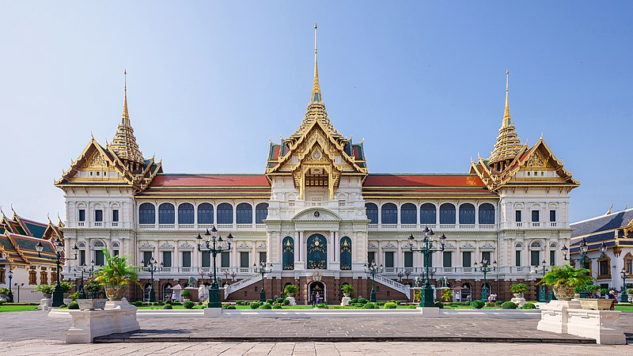
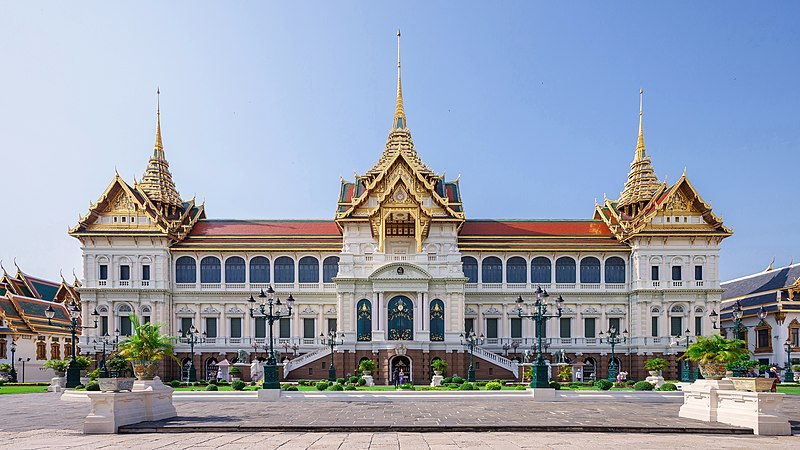

大皇宮
公元1782年拉瑪一世登基後，認爲吞武里皇宮的位置不占優勢，於是下令將國都遷到湄南河東岸並興建新皇宮。當時的建設地點原是候府（陳聯）與華人聚居之地。這座新建的宮殿直到到公元1785年才竣工。新皇宮以大城時代的皇宮爲藍本，並且皇宮的地點也是按照兵法所建。在拉瑪一世時，皇宮總面積爲一百三十二泰畝，到拉瑪二世時期又將皇宮總面積擴大爲一百五十二泰畝（244,000平方米）。到了拉瑪四世時期，此地便開始被稱爲「大皇宮」。
公元1782年拉瑪一世登基後，認爲吞武里皇宮的位置不占優勢，於是下令將國都遷到湄南河東岸並興建新皇宮。當時的建設地點原是候府（陳聯）與華人聚居之地。這座新建的宮殿直到到公元1785年才竣工。新皇宮以大城時代的皇宮爲藍本，並且皇宮的地點也是按照兵法所建。在拉瑪一世時，皇宮總面積爲一百三十二泰畝，到拉瑪二世時期又將皇宮總面積擴大爲一百五十二泰畝（244,000平方米）。到了拉瑪四世時期，此地便開始被稱爲「大皇宮」。
